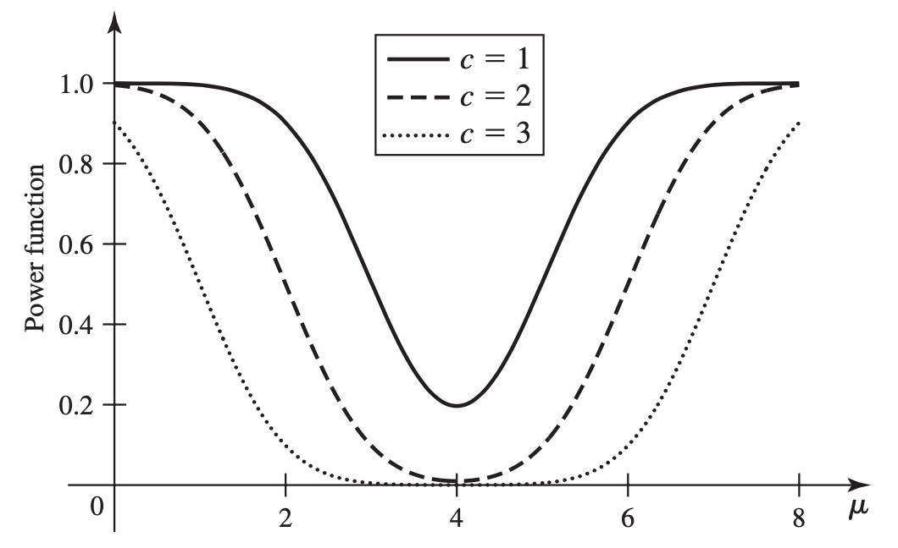
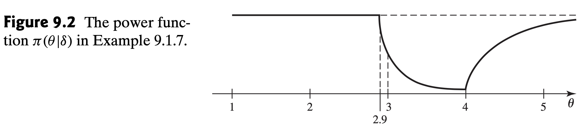
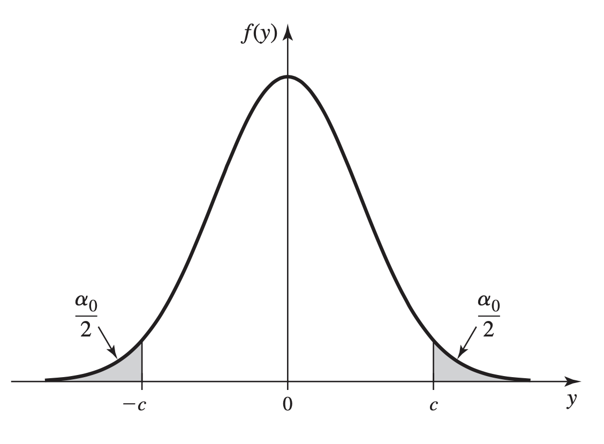
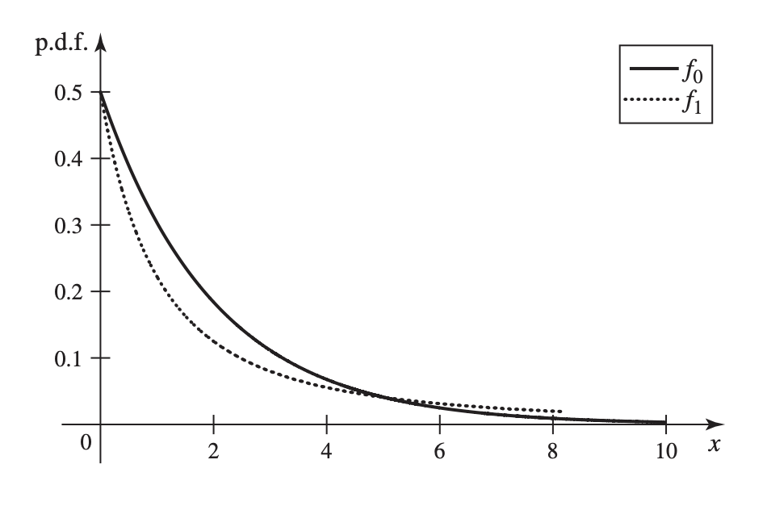

In general, hypothesis testing concerns trying to decide whether a parameter \(\theta\) lies in one subset of the parameter space or in its complement. When \(\theta\) is one-dimensional, at least one of the two subsets will typically be an interval, possibly degenerate. In this section, we introduce the notation and some common methodology associated with hypothesis testing.
We recommend to read the part of an equivalence between hypothesis tests and confidence intervals.
Consider a statistical problem involving a parameter \(\theta \in \Omega\), where \(\Omega\) is a certain parameter space.
Suppose that
Let
Goal: To decide which of hypothesis \(H_0\) or \(H_1\) appears to be true.
Goal: To decide which of hypothesis \(H_0\) or \(H_1\) appears to be true.
A problem of this type, in which there are only two possible decisions, is called a problem of testing hypotheses.
A procedure for deciding which hypothesis to choose is called a test procedure or simply a test.
The hypothesis \(H_0\) is called the null hypothesis and the hypothesis \(H_1\) is called the alternative hypothesis.
When performing a test, if we decide that \(\theta\) lies in \(\Omega_1\), we are said to reject \(H_0\). If we decide that \(\theta\) lies in \(\Omega_0\), we are said not to reject \(H_0\).
Egyptian Skulls
Observations: breadth measurements (in mm) of the skulls found in Egypt from various time periods
Model: \(\mathcal{N}(\mu, \sigma^2)\).
Goal: Interest might lie in how \(\mu\) compares to the breadth of a modern-day skull, about 140mm.
Hypotheses setup:
Question: How did we decide that the null hypothesis should be \(H_0: \mu \ge 140\) rather than \(\mu < 140\)? Would we be led to the same conclusion either way?
We can address these issues after we introduce the possible errors that can arise in hypothesis testing.
For \(i = 0\) or \(i=1\), if \(\Omega_i\) contains just a single value of \(\theta\), then \(H_i\) is a single hypothesis.
If the set \(\Omega_i\) contains more than one value of \(\theta\), then \(H_i\) is a composite hypothesis.
For example, a simple null hypothesis \(H_0\) must have the form
Let \(\theta\) be a one-dimensional parameter. One-sided null hypotheses are of the form \(H_0 : \theta \le \theta_0\) or \(H_0 : \theta \ge \theta_0\), with the corresponding one-sided alternative hypotheses being \(H_1 : \theta>\theta_0\) or \(H_1: \theta < \theta_0\).
When the null hypothesis is simple, the alternative hypothesis is usually two-sided, \(H_1: \theta \neq \theta_0\).
Example 9.1.3 Suppose that \(\vec{X} = (X_1, \dots, X_n)\) is random sample from \(\mathcal{N}(\mu, \sigma^2)\).
We wish to test the hypotheses:
Question: What is a reasonable criterion to reject \(H_0\)?
Reject \(H_0\) if \(\overline{X}_n\) is far from \(\mu_0\).
For example, we could choose a number \(c\) and reject \(H_0\) if
Alternatively, we can also based on theoretical considerations, choose a number \(c\) and reject \(H_0\) if \(|U| \ge c\), where
In such a way, we actually divide the sample space \(S\) into two sets
We then reject \(H_0\) if \(\vec{X}\in S_1\), and we don’t reject \(H_0\) if \(\vec{X}\in S_0\).
A simpler way to express the procedure is to define the statistic \(T = |\overline{X}_n - \mu_0|\), and reject \(H_0\) if \(T\ge c\).
In general, we can specify a test procedure by partitioning \(S\) into two subsets:
The set defined above is called the critical region of the test.
In summary, a test procedure is determined by specifying the critical region of the test. In most hypothesis-testing problems, the critical region is defined in terms of a statistic, \(T = r(\vec{X})\).
Let \(\vec{X}\) be a random sample from a distribution that depends on a parameter \(\theta\).
Let \(T = r(\vec{X})\) be a statistic, and let \(R\) be a subset of the real line. Suppose that a test procedure for the hypotheses is of the form “reject \(H_0\) if \(T \in R\).”
Then we call \(T\) a test statistic, and we call \(R\) the rejection region of the test.
When a test is defined in terms of a test statistic \(T\) and rejection region \(R\), the set \(S_1 = \{\vec{x}: r(\vec{x}) \in R\}\) is the critical region.
In Example 9.1.3, we reject \(H_0\) if \(T = |\overline{X}_n - \mu_0| \ge c\), and the rejection region \(R = [c, \infty]\).
Let \(\delta\) be a test procedure, and \(S_1\) be the critical region of \(\delta\), we call the probability given a \(\theta\in \Omega\) that the test \(\delta\) will reject \(H_0\), i.e.,
the power function of the test \(\delta\).
If \(\delta\) is described in terms of a test statistic \(T\) and rejection region \(R\), the power function is
Testing Hypotheses about the Mean of a Normal Distribution with Known Variance
In Example 9.1.3, the test \(\delta\) is based on the test statistic \(T = |\overline{X}_n - \mu_0|\) with rejection region \(R = [c, \infty)\).
Note that \(\overline{X}_n \sim \mathcal{N}(\mu, \sigma^2/n)\), then the power function
The following figure plots the power functions of three different tests with \(c = 1, 2, 3\) in the specific example in which \(\mu_0 =4, n=15\), and \(\sigma^2 =9\).

Recall that the power function \(\pi(\theta|\delta)\) specifies, for each possible value of the parameter \(\theta\), the probability that \(\delta\) will reject \(H_0\), it follows that the ideal power function would be one for which
“Ideal” here means that test \(\delta\) would lead to the correct decision with probability \(1\).
In a practical problem, however, there would seldom exist any test procedure having such an ideal power function.
An erroneous decision to reject a true null hypothesis is a type I error, and an erroneous decision not to reject a false null hypothesis is called a type II error.
In terms of the power function,
Now our goal is to choose a test \(\delta\) so that the power function \(\pi(\theta|\delta)\) is low for \(\theta\in \Omega_0\), and high for \(\theta\in \Omega_1\).
Consider the test \(\delta_0\) that never rejects \(H_0\), then we have
Question: What are the probabilities of making type I and type II errors, respectively?
Consider the test \(\delta_1\) that always rejects \(H_0\), then we have
Question: What are the probabilities of making type I and type II errors, respectively?
Given a number \(\alpha_0\in (0, 1)\), the test \(\delta\) such that
is called a level \(\alpha_0\) test, and we say that the test has level of significance \(\alpha_0\).
In addition, the size \(\alpha(\delta)\) of a test \(\delta\) is defined as follows:
A test \(\delta\) is a level \(\alpha_0\) test if and only if its size is at most \(\alpha_0\) (i.e. \(\alpha(\delta)\le \alpha_0\)). If the null hypothesis is simple, that is, \(H_0: \theta = \theta_0\), then the size of \(\delta\) will be \(\alpha(\delta) = \pi(\theta_0|\delta)\).
Observations: \(X_1, \dots, X_n \sim \text{Unif}([0, \theta])\), with \(\theta\) unknown.
Hypotheses:
We know (from Example 7.5.7) that the M.L.E. of \(\theta\) is
Since \(Y_n \to \theta\) as \(n\to \infty\) in probability, we can define a test \(\delta\) such that it does not reject \(H_0\) if \(2.9< Y_n < 4\) and rejects \(H_0\) if \(Y_n\) does not lie in this interval.
Question:
What is the critical region, rejection region, power function, size of the test, level of significance?
Critical region:
Rejection region:
The power function:
If \(\theta \le 2.9\),
So in this case,
If \(2.9 < \theta \le 4\),
So in this case,
If \(\theta > 4\),
So in this case,

The size of \(\delta\):
In particular, if the sample size \(n=68\), then the size of \(\delta\) is
and so \(\delta\) is a level \(\alpha_0\) test for every level of significance
Example 9.1.8 In Example 9.1.5, our test is
To specify this test is to specify the value of \(c\).
Now suppose we desire our test to have the level of significance \(\alpha_0\). That is,
Since the null hypothesis here is simple, the above inequality becomes
Also we have \(\overline{X}_n \sim \mathcal{N}(\mu_0, \sigma^2/n)\), so we can find a value of \(c\) that makes the size of the test exactly \(\alpha_0\) for each \(\alpha_0\).
where \(Z\sim \mathcal{N}(0, 1)\), and \(\Phi\) is the C.D.F. of \(Z\).

In other words, we need
which gives
Therefore, the desired test is
where \(Z = \sqrt{n}(\overline{X}_n - \mu_0)/\sigma\).
In Example 9.1.8, suppose that we choose to test the null hypothesis at level \(\alpha_0 = 0.05\).
Then
So the test is
Question: Any issues with the result of this test?
Please read about the \(p\) value up to Example 9.1.12.
The simplest hypothesis-testing situation is that in which there are only two possible values of the parameter.
In such cases, it is possible to identify a collection of test procedures that have certain optimal properties.
In Example 3.7.5, we modeled the service times \(\vec{X} = (X_1, \dots, X_n)\) of \(n\) customers in a queue having the joint p.d.f.
Another model using the exponential distribution is proposed:
Question:
If the manager observes several service times, how can she test which of the two distributions appears to describe the data?
In general, we assume
In this case, we use the notation
for the parameter space, where
Then we are interested in testing the following simple hypotheses:
We denote by
Below are the two p.d.f.’s for the case of \(n=1\) in Example 9.2.1.
Question: If the manager observes one service time, \(X_1\). What is a reasonable test?
The figure below shows two p.d.f.’s for the case of \(n=1\) in Example 9.2.1.

Assume the test that she chooses is
Please compute the type I and type II error probabilities for this test.
Solution
To compute \(\alpha(\delta)\), we assume \(\theta= \theta_0\), i.e., use \(f_0\) as the p.d.f. of \(X_1\):
To compute \(\beta(\delta)\), we assume \(\theta= \theta_1\), i.e., use \(f_1\) as the p.d.f. of \(X_1\):
Theorem 9.2.1
Suppose \(a\) and \(b\) are specified positive constants. Let \(\delta^\ast\) denote a test such that the hypothesis \(H_0\) is not rejected if \(a f_0(\vec{x})> b f_1(\vec{x})\) and the hypothesis \(H_0\) is rejected if \(a f_0(\vec{x})< b f_1(\vec{x})\). The null hypothesis \(H_0\) can be either rejected or not if \(a f_0(\vec{x}) = b f_1(\vec{x})\).
Then for every other test \(\delta\),
For simplicity, we assume that the samples follow a discrete distribution.
Let \(S_1\) be the critical region, so if \(\vec{x}\in S_1\), then reject \(H_0\); if \(\vec{x}\in S_1^C=S_0\), then not reject \(H_0\).
Now note that to specify a test \(\delta^\ast\) is equivalent to choosing \(S_1\).
In order to minimize the linear combination \(\alpha(\delta) + b \beta(\delta)\), we choose
If we define by \(f_1(\vec{x})/f_0(\vec{x})\), the likelihood ratio of the sample, then Theorem 9.2.1 can be reworded as follows.
Corollary 9.2.1
Assume the condition of Theorem 9.2.1, and assume that \(a>0\) and \(b>0\). Then the test \(\delta\) for which the value of \(a\alpha(\delta)+ b \beta(\delta)\) is a minimum rejects \(H_0\) when the likelihood ratio exceeds \(a/b\) and does not reject \(H_0\) when the likelihood ratio is less than \(a/b\).
Instead of rejecting \(H_0\) if \(X_1 \ge 4\) in Example 9.2.2, the manager could apply Theorem 9.2.1.
Suppose that she chooses the test such that it rejects \(H_0\) if \(f_1(x_1)/f_0(x_1)>1\). That is, if
By numerical approximation, we solve the inequality above and obtain
Then
and
where the latter is the sum of the two error probabilities in Example 9.2.2.
In this sense, the test that rejects \(H_0\) if \(X_1 > 5.025725\) is better than the test that rejects \(H_0\) if \(X_1 \ge 4\).
Suppose \(\vec{X} = (X_1, \dots, X_n)\) ia a random sample from \(\mathcal{N}(\mu, \sigma^2)\), with unknown mean \(\mu\) but known variance \(\sigma^2=1\).
Hypotheses to be tested:
Determine the test \(\delta_0\) for which the value of \(2\alpha(\delta_0) + \beta(\delta_0)\) is a minimum.
When \(H_0\) is true, the joint p.d.f. is
When \(H_1\) is true, the joint p.d.f. is
The likelihood ration is
Then by Corollary 9.2.1, the desired test \(\delta_0\) rejects \(H_0\) if
which is equivalent to
For example, if \(n=9\), the optimal test \(\delta_0\) rejects \(H_0\) when \(\overline{X}_n > 0.577\).
Therefore,
The minimum value of the linear combination is
Next, we consider another type of optimal tests where the probability \(\alpha(\delta)\) is upper bounded, and we seek a test \(\delta\) for which \(\beta(\delta)\) will be minimized.
Theorem 9.2.2
Suppose that \(\delta'\) is a test that has the following form for some constant \(k>0\):
If \(\delta\) is another test, then
Apply Theorem 9.2.1 and set \(a=k, b = 1\), we have
If \(\alpha(\delta) \le \alpha(\delta')\), the we must have \(\beta(\delta)\ge \beta(\delta')\).
Question: How to make use of the Neyman-Pearson lemma?
Suppose our goal is to find a test for which \(\alpha(\delta) = \alpha_0\), and \(\beta(\delta)\) is a minimum.
According to the lemma, you only need to find a value of \(k\) for which
Suppose \(\vec{X} = (X_1, \dots, X_n)\) ia a random sample from \(\mathcal{N}(\mu, \sigma^2)\), with unknown mean \(\mu\) but known variance \(\sigma^2=1\).
Hypotheses to be tested:
Find a test \(\delta\) to minimize \(\beta(\delta)\) such that \(\alpha(\delta)\le 0.05\).
The likelihood ratio is
Then
where \(k' = 1/2 + 1/2 \cdot \log k\).
Suppose that we can find a value of \(k'\) such that
Then the test \(\delta'\), which rejects \(H_0\) when \(\overline{X}_n > k'\), will satisfy \(\alpha(\delta') = 0.05\).
Now it suffices to find \(k'\).
In fact,
In other words,
and thus
So
In summary, among all tests for which \(\alpha(\delta) \le 0.05\), the test \(\delta'\) that rejects \(H_0\) when \(\overline{X}_n>1.645 n^{-1/2}\) has the smallest probability of type II error.
Question: What is this smallest \(\beta(\delta')\)?
Recall that
Given \(\mu = 1\), we have \(\overline{X}_n | \mu =1 \sim \mathcal{N}(1, 1/n)\).
Thus,
For instance, when \(n=9\), we have